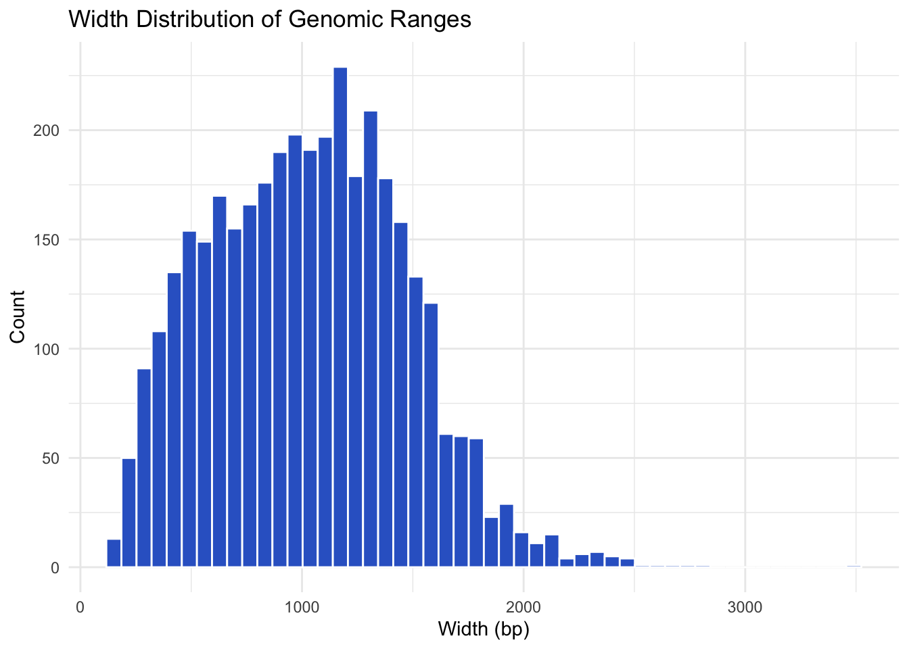

# Create a new directory
dir.create("data")
# Set download limit higher
options(timeout=1000)
# Download file
download.file(
url = "https://biology-informed-multiomics.s3.eu-central-1.amazonaws.com/biology-informed-multiomics.tar",
destfile = "data/data.tar"
)
# Unzip file
untar(tarfile = "data/data.tar", exdir = "data")
# Remove tar file
file.remove("data/data.tar")Exercise 1
Datasets, SummarizedExperiment, and GRanges
Learning Outcomes
By the end of this notebook, you will be able to:
- Understand the structure of
SummarizedExperimentandGRangesobjects inR. - Access and manipulate metadata and assays within
SummarizedExperiment. - Visualize and subset genomic intervals using
GRanges. - Recognize how even RNA expression data can be stored as genomic ranges.
Note
Note: Genomic data types like RNA-seq are often stored as SummarizedExperiment or GRanges, which are efficient for multi-omics integration.
Dataset for the course
In this course, we are working with multi-omics datasets derived from the developing mouse neural tube at two developmental stages: E11.5 and E15.5. These stages represent key transitions in central nervous system development. These datasets are downloaded and processed from the ENCODE project: Mouse Development Matrix. For the sake of time and efficient computational usage, datasets are analyzed for only chromosomes 1 and 2.
The following chromatin and transcriptional profiling datasets are included, each with two biological replicates per time point:
| Assay | Description | E11.5 | E15.5 |
|---|---|---|---|
| ATAC-seq | Chromatin accessibility profiling | 2 | 2 |
| H3K4me3 | Histone mark at active promoters | 2 | 2 |
| H3K4me1 | Histone mark at enhancers and poised regulatory elements | 2 | 2 |
| H3K27me3 | Repressive histone modification (Polycomb repression) | 2 | 2 |
| H3K27ac | Active enhancer and promoter histone mark | 2 | 2 |
| RNA-seq | Gene expression quantification via transcriptome sequencing | 2 | 2 |
All datasets are preprocessed and stored in SummarizedExperiment (SE) objects:
- Assays contain count matrices (e.g., raw counts, logCPM).
-
RowRanges describe genomic coordinates (
GRanges) for each feature (gene, peak, region). - ColData holds metadata for each sample (e.g., stage, replicate).
The use of SE objects enables consistent handling of multi-omics data, facilitates downstream integration, and supports interoperability with Bioconductor tools.
-
SummarizedExperimentenables structured storage of high-dimensional omics data and metadata. -
GRangesmakes it easy to manipulate and visualize genomic intervals across datasets. - Most analyses — from clustering to visualization — can be performed directly on these containers.
Download and Extract Data
Load Libraries
Load SummarizedExperiment Objects
🧪 Exercise 1: Working with SummarizedExperiment (SE)
1. Inspect the RNA SE Object
rnaclass: RangedSummarizedExperiment
dim: 2216 4
metadata(0):
assays(2): counts logCPM
rownames(2216): ENSMUSG00000000194 ENSMUSG00000000247 ...
ENSMUSG00000103948 ENSMUSG00000104257
rowData names(18): Row.names gene_id ... PValue qvalue
colnames(4): RNA_11half_1.tsv.gz RNA_11half_2.tsv.gz
RNA_15half_1.tsv.gz RNA_15half_2.tsv.gz
colData names(2): sample group2. Access rowRanges, colData, and assays
rowRanges(rna)[1:5]GRanges object with 5 ranges and 18 metadata columns:
seqnames ranges strand | Row.names
<Rle> <IRanges> <Rle> | <character>
ENSMUSG00000000194 chr2 31152316-31218775 + | ENSMUSG00000000194
ENSMUSG00000000247 chr2 38339281-38369733 + | ENSMUSG00000000247
ENSMUSG00000000305 chr2 179442431-179899373 + | ENSMUSG00000000305
ENSMUSG00000000308 chr2 121357714-121363737 + | ENSMUSG00000000308
ENSMUSG00000000359 chr2 152626951-152635198 + | ENSMUSG00000000359
gene_id SYMBOL GENENAME
<character> <character> <character>
ENSMUSG00000000194 277463 Gpr107 G protein-coupled re..
ENSMUSG00000000247 16870 Lhx2 LIM homeobox protein 2
ENSMUSG00000000305 12561 Cdh4 cadherin 4
ENSMUSG00000000308 12716 Ckmt1 creatine kinase, mit..
ENSMUSG00000000359 19700 Rem1 rad and gem related ..
ENSEMBL geneLength geneChr geneStart
<character> <integer> <character> <integer>
ENSMUSG00000000194 ENSMUSG00000000194 66460 chr2 31152316
ENSMUSG00000000247 ENSMUSG00000000247 30453 chr2 38339281
ENSMUSG00000000305 ENSMUSG00000000305 456943 chr2 179442431
ENSMUSG00000000308 ENSMUSG00000000308 6024 chr2 121357714
ENSMUSG00000000359 ENSMUSG00000000359 8248 chr2 152626951
geneEnd geneStrand geneId transcriptId
<integer> <character> <character> <character>
ENSMUSG00000000194 31218775 + 277463 ENSMUST00000056433.6
ENSMUSG00000000247 38369733 + 16870 ENSMUST00000143783.8
ENSMUSG00000000305 179899373 + 12561 ENSMUST00000000314.12
ENSMUSG00000000308 121363737 + 12716 ENSMUST00000125812.7
ENSMUSG00000000359 152635198 + 19700 ENSMUST00000000369.3
anno logFC logCPM F PValue
<character> <numeric> <numeric> <numeric> <numeric>
ENSMUSG00000000194 Gene 1.12372 8.74812 137.26552 8.72516e-05
ENSMUSG00000000247 Gene -1.60859 5.40640 11.86742 1.87646e-02
ENSMUSG00000000305 Gene 2.11822 9.25294 504.51658 3.72434e-06
ENSMUSG00000000308 Gene 3.79826 8.63364 420.96960 5.79582e-06
ENSMUSG00000000359 Gene 1.90855 3.12253 2.67341 1.64139e-01
qvalue
<numeric>
ENSMUSG00000000194 0.000834921
ENSMUSG00000000247 0.033322641
ENSMUSG00000000305 0.000490337
ENSMUSG00000000308 0.000490337
ENSMUSG00000000359 0.211786009
-------
seqinfo: 66 sequences from an unspecified genome; no seqlengthscolData(rna)DataFrame with 4 rows and 2 columns
sample group
<character> <factor>
RNA_11half_1.tsv.gz RNA_11half_1.tsv.gz 11half
RNA_11half_2.tsv.gz RNA_11half_2.tsv.gz 11half
RNA_15half_1.tsv.gz RNA_15half_1.tsv.gz 15half
RNA_15half_2.tsv.gz RNA_15half_2.tsv.gz 15halfassay(rna)[1:5,] RNA_11half_1.tsv.gz RNA_11half_2.tsv.gz RNA_15half_1.tsv.gz
ENSMUSG00000000194 848 893.35 2619.55
ENSMUSG00000000247 169 246.00 51.00
ENSMUSG00000000305 694 778.00 4431.00
ENSMUSG00000000308 148 195.00 3011.00
ENSMUSG00000000359 8 13.00 101.00
RNA_15half_2.tsv.gz
ENSMUSG00000000194 3046.41
ENSMUSG00000000247 153.00
ENSMUSG00000000305 5102.00
ENSMUSG00000000308 4131.00
ENSMUSG00000000359 16.00assays(rna)List of length 2
names(2): counts logCPM3. Boxplot of Expression for a Few Genes
df <- as.data.frame(t(assay(rna)[1:5, ]))
df$sample <- rownames(df)
df_long <- pivot_longer(df, -sample, names_to = "gene", values_to = "expression")
ggplot(df_long, aes(x = gene, y = expression)) +
geom_boxplot(aes(fill = gene)) +
theme_bw() +
theme(axis.text.x = element_text(angle = 45, vjust = 1, hjust=1)) +
labs(title = "Expression Distribution of Selected Genes",
y = "Expression", x = "Genes") +
scale_fill_brewer(palette = "Set2")
Question 1
Please make a boxplot of samples, before and after normalization.
Hint: Check assays of rna object. Raw counts should be converted to log2 to make a comparison.
TipAnswer
# Extract assays
raw_counts <- assay(rna, "counts")
logcpm <- assay(rna, "logCPM")
# Convert to long data frames for ggplot
df_raw <- as.data.frame(raw_counts)
df_raw$gene <- rownames(df_raw)
df_raw_long <- pivot_longer(df_raw, -gene, names_to = "sample", values_to = "expression")
df_raw_long$assay <- "Raw Counts"
df_raw_long$expression <- log2(df_raw_long$expression + 1)
df_log <- as.data.frame(logcpm)
df_log$gene <- rownames(df_log)
df_log_long <- pivot_longer(df_log, -gene, names_to = "sample", values_to = "expression")
df_log_long$assay <- "logCPM"
# Combine both
df_combined <- rbind(df_raw_long, df_log_long)
# Set factor for names to make Raw counts to be plotted first
df_combined$assay <- factor(df_combined$assay, levels = unique(df_combined$assay))
# Plot boxplot across samples
ggplot(df_combined, aes(x = sample, y = expression, fill = assay)) +
geom_boxplot(outlier.size = 0.5, lwd = 0.3) +
theme_bw() +
theme(axis.text.x = element_text(angle = 90, vjust = 0.5, hjust=1)) +
facet_wrap(~ assay, scales = "free_y") +
labs(title = "Sample-wise Expression: Raw vs Normalized",
x = "Samples", y = "Expression") +
scale_fill_brewer(palette = "Set2")
Question 2
Make a new SummarizedExperiment object by sub-setting rna. Take only first 2 samples and first 10 genes. Check the assays, row and column metadata.
Tip
rna_subset <- rna[1:10, 1:2]
rna_subsetclass: RangedSummarizedExperiment
dim: 10 2
metadata(0):
assays(2): counts logCPM
rownames(10): ENSMUSG00000000194 ENSMUSG00000000247 ...
ENSMUSG00000000827 ENSMUSG00000000876
rowData names(18): Row.names gene_id ... PValue qvalue
colnames(2): RNA_11half_1.tsv.gz RNA_11half_2.tsv.gz
colData names(2): sample groupassays(rna_subset)List of length 2
names(2): counts logCPMassay(rna_subset, "counts") RNA_11half_1.tsv.gz RNA_11half_2.tsv.gz
ENSMUSG00000000194 848.00 893.35
ENSMUSG00000000247 169.00 246.00
ENSMUSG00000000305 694.00 778.00
ENSMUSG00000000308 148.00 195.00
ENSMUSG00000000359 8.00 13.00
ENSMUSG00000000392 349.00 333.00
ENSMUSG00000000823 1851.87 2077.29
ENSMUSG00000000826 5908.00 7011.00
ENSMUSG00000000827 2788.23 2998.49
ENSMUSG00000000876 374.00 400.00assay(rna_subset, "logCPM") RNA_11half_1.tsv.gz RNA_11half_2.tsv.gz
ENSMUSG00000000194 8.086697 8.068900
ENSMUSG00000000247 5.764953 6.211847
ENSMUSG00000000305 7.797861 7.869643
ENSMUSG00000000308 5.574463 5.877929
ENSMUSG00000000359 1.491187 2.054079
ENSMUSG00000000392 6.807747 6.647445
ENSMUSG00000000823 9.212828 9.285543
ENSMUSG00000000826 10.886099 11.040056
ENSMUSG00000000827 9.802991 9.814900
ENSMUSG00000000876 6.907344 6.911323colData(rna_subset)DataFrame with 2 rows and 2 columns
sample group
<character> <factor>
RNA_11half_1.tsv.gz RNA_11half_1.tsv.gz 11half
RNA_11half_2.tsv.gz RNA_11half_2.tsv.gz 11halfrowData(rna_subset)DataFrame with 10 rows and 18 columns
Row.names gene_id SYMBOL
<character> <character> <character>
ENSMUSG00000000194 ENSMUSG00000000194 277463 Gpr107
ENSMUSG00000000247 ENSMUSG00000000247 16870 Lhx2
ENSMUSG00000000305 ENSMUSG00000000305 12561 Cdh4
ENSMUSG00000000308 ENSMUSG00000000308 12716 Ckmt1
ENSMUSG00000000359 ENSMUSG00000000359 19700 Rem1
ENSMUSG00000000392 ENSMUSG00000000392 14089 Fap
ENSMUSG00000000823 ENSMUSG00000000823 269401 Zfp512b
ENSMUSG00000000826 ENSMUSG00000000826 13002 Dnajc5
ENSMUSG00000000827 ENSMUSG00000000827 66314 Tpd52l2
ENSMUSG00000000876 ENSMUSG00000000876 59038 Pxmp4
GENENAME ENSEMBL geneLength
<character> <character> <integer>
ENSMUSG00000000194 G protein-coupled re.. ENSMUSG00000000194 66460
ENSMUSG00000000247 LIM homeobox protein 2 ENSMUSG00000000247 30453
ENSMUSG00000000305 cadherin 4 ENSMUSG00000000305 456943
ENSMUSG00000000308 creatine kinase, mit.. ENSMUSG00000000308 6024
ENSMUSG00000000359 rad and gem related .. ENSMUSG00000000359 8248
ENSMUSG00000000392 fibroblast activatio.. ENSMUSG00000000392 73133
ENSMUSG00000000823 zinc finger protein .. ENSMUSG00000000823 10701
ENSMUSG00000000826 DnaJ heat shock prot.. ENSMUSG00000000826 34649
ENSMUSG00000000827 tumor protein D52-li.. ENSMUSG00000000827 20825
ENSMUSG00000000876 peroxisomal membrane.. ENSMUSG00000000876 17951
geneChr geneStart geneEnd geneStrand geneId
<character> <integer> <integer> <character> <character>
ENSMUSG00000000194 chr2 31152316 31218775 + 277463
ENSMUSG00000000247 chr2 38339281 38369733 + 16870
ENSMUSG00000000305 chr2 179442431 179899373 + 12561
ENSMUSG00000000308 chr2 121357714 121363737 + 12716
ENSMUSG00000000359 chr2 152626951 152635198 + 19700
ENSMUSG00000000392 chr2 62500943 62574075 - 14089
ENSMUSG00000000823 chr2 181582103 181592803 - 269401
ENSMUSG00000000826 chr2 181520485 181555133 + 13002
ENSMUSG00000000827 chr2 181497142 181517966 + 66314
ENSMUSG00000000876 chr2 154585758 154603708 - 59038
transcriptId anno logFC logCPM
<character> <character> <numeric> <numeric>
ENSMUSG00000000194 ENSMUST00000056433.6 Gene 1.123717 8.74812
ENSMUSG00000000247 ENSMUST00000143783.8 Gene -1.608592 5.40640
ENSMUSG00000000305 ENSMUST00000000314.12 Gene 2.118219 9.25294
ENSMUSG00000000308 ENSMUST00000125812.7 Gene 3.798256 8.63364
ENSMUSG00000000359 ENSMUST00000000369.3 Gene 1.908545 3.12253
ENSMUSG00000000392 ENSMUST00000102732.9 Gene -2.102269 6.02595
ENSMUSG00000000823 ENSMUST00000108789.8 Gene 0.776790 9.69040
ENSMUSG00000000826 ENSMUST00000072334.11 Gene 0.991148 11.54446
ENSMUSG00000000827 ENSMUST00000184588.7 Gene -0.557763 9.55700
ENSMUSG00000000876 ENSMUST00000000896.10 Gene 0.304488 7.07357
F PValue qvalue
<numeric> <numeric> <numeric>
ENSMUSG00000000194 137.26552 8.72516e-05 0.000834921
ENSMUSG00000000247 11.86742 1.87646e-02 0.033322641
ENSMUSG00000000305 504.51658 3.72434e-06 0.000490337
ENSMUSG00000000308 420.96960 5.79582e-06 0.000490337
ENSMUSG00000000359 2.67341 1.64139e-01 0.211786009
ENSMUSG00000000392 82.37588 2.92695e-04 0.001579555
ENSMUSG00000000823 21.64298 5.77573e-03 0.012874947
ENSMUSG00000000826 77.71581 3.35396e-04 0.001683051
ENSMUSG00000000827 46.64975 1.08655e-03 0.003701948
ENSMUSG00000000876 4.36632 9.17564e-02 0.127276923rowRanges(rna_subset)GRanges object with 10 ranges and 18 metadata columns:
seqnames ranges strand | Row.names
<Rle> <IRanges> <Rle> | <character>
ENSMUSG00000000194 chr2 31152316-31218775 + | ENSMUSG00000000194
ENSMUSG00000000247 chr2 38339281-38369733 + | ENSMUSG00000000247
ENSMUSG00000000305 chr2 179442431-179899373 + | ENSMUSG00000000305
ENSMUSG00000000308 chr2 121357714-121363737 + | ENSMUSG00000000308
ENSMUSG00000000359 chr2 152626951-152635198 + | ENSMUSG00000000359
ENSMUSG00000000392 chr2 62500943-62574075 - | ENSMUSG00000000392
ENSMUSG00000000823 chr2 181582103-181592803 - | ENSMUSG00000000823
ENSMUSG00000000826 chr2 181520485-181555133 + | ENSMUSG00000000826
ENSMUSG00000000827 chr2 181497142-181517966 + | ENSMUSG00000000827
ENSMUSG00000000876 chr2 154585758-154603708 - | ENSMUSG00000000876
gene_id SYMBOL GENENAME
<character> <character> <character>
ENSMUSG00000000194 277463 Gpr107 G protein-coupled re..
ENSMUSG00000000247 16870 Lhx2 LIM homeobox protein 2
ENSMUSG00000000305 12561 Cdh4 cadherin 4
ENSMUSG00000000308 12716 Ckmt1 creatine kinase, mit..
ENSMUSG00000000359 19700 Rem1 rad and gem related ..
ENSMUSG00000000392 14089 Fap fibroblast activatio..
ENSMUSG00000000823 269401 Zfp512b zinc finger protein ..
ENSMUSG00000000826 13002 Dnajc5 DnaJ heat shock prot..
ENSMUSG00000000827 66314 Tpd52l2 tumor protein D52-li..
ENSMUSG00000000876 59038 Pxmp4 peroxisomal membrane..
ENSEMBL geneLength geneChr geneStart
<character> <integer> <character> <integer>
ENSMUSG00000000194 ENSMUSG00000000194 66460 chr2 31152316
ENSMUSG00000000247 ENSMUSG00000000247 30453 chr2 38339281
ENSMUSG00000000305 ENSMUSG00000000305 456943 chr2 179442431
ENSMUSG00000000308 ENSMUSG00000000308 6024 chr2 121357714
ENSMUSG00000000359 ENSMUSG00000000359 8248 chr2 152626951
ENSMUSG00000000392 ENSMUSG00000000392 73133 chr2 62500943
ENSMUSG00000000823 ENSMUSG00000000823 10701 chr2 181582103
ENSMUSG00000000826 ENSMUSG00000000826 34649 chr2 181520485
ENSMUSG00000000827 ENSMUSG00000000827 20825 chr2 181497142
ENSMUSG00000000876 ENSMUSG00000000876 17951 chr2 154585758
geneEnd geneStrand geneId transcriptId
<integer> <character> <character> <character>
ENSMUSG00000000194 31218775 + 277463 ENSMUST00000056433.6
ENSMUSG00000000247 38369733 + 16870 ENSMUST00000143783.8
ENSMUSG00000000305 179899373 + 12561 ENSMUST00000000314.12
ENSMUSG00000000308 121363737 + 12716 ENSMUST00000125812.7
ENSMUSG00000000359 152635198 + 19700 ENSMUST00000000369.3
ENSMUSG00000000392 62574075 - 14089 ENSMUST00000102732.9
ENSMUSG00000000823 181592803 - 269401 ENSMUST00000108789.8
ENSMUSG00000000826 181555133 + 13002 ENSMUST00000072334.11
ENSMUSG00000000827 181517966 + 66314 ENSMUST00000184588.7
ENSMUSG00000000876 154603708 - 59038 ENSMUST00000000896.10
anno logFC logCPM F PValue
<character> <numeric> <numeric> <numeric> <numeric>
ENSMUSG00000000194 Gene 1.123717 8.74812 137.26552 8.72516e-05
ENSMUSG00000000247 Gene -1.608592 5.40640 11.86742 1.87646e-02
ENSMUSG00000000305 Gene 2.118219 9.25294 504.51658 3.72434e-06
ENSMUSG00000000308 Gene 3.798256 8.63364 420.96960 5.79582e-06
ENSMUSG00000000359 Gene 1.908545 3.12253 2.67341 1.64139e-01
ENSMUSG00000000392 Gene -2.102269 6.02595 82.37588 2.92695e-04
ENSMUSG00000000823 Gene 0.776790 9.69040 21.64298 5.77573e-03
ENSMUSG00000000826 Gene 0.991148 11.54446 77.71581 3.35396e-04
ENSMUSG00000000827 Gene -0.557763 9.55700 46.64975 1.08655e-03
ENSMUSG00000000876 Gene 0.304488 7.07357 4.36632 9.17564e-02
qvalue
<numeric>
ENSMUSG00000000194 0.000834921
ENSMUSG00000000247 0.033322641
ENSMUSG00000000305 0.000490337
ENSMUSG00000000308 0.000490337
ENSMUSG00000000359 0.211786009
ENSMUSG00000000392 0.001579555
ENSMUSG00000000823 0.012874947
ENSMUSG00000000826 0.001683051
ENSMUSG00000000827 0.003701948
ENSMUSG00000000876 0.127276923
-------
seqinfo: 66 sequences from an unspecified genome; no seqlengthsQuestion 3
Try to run all other commands from the following image on other SE objects as well

🧪 Exercise 2: Working with GRanges
1. Extract and Inspect GRanges from ATAC-seq
gr <- rowRanges(atac)
grGRanges object with 3656 ranges and 18 metadata columns:
seqnames ranges strand | annotation geneChr
<Rle> <IRanges> <Rle> | <character> <integer>
[1] chr1 3670547-3672665 * | Promoter (<=1kb) 1
[2] chr1 4332510-4332710 * | Intron (ENSMUST00000.. 1
[3] chr1 4491755-4492573 * | Promoter (1-2kb) 1
[4] chr1 4571186-4572423 * | Distal Intergenic 1
[5] chr1 4785062-4786325 * | Promoter (<=1kb) 1
... ... ... ... . ... ...
[3652] chr2 181764664-181764891 * | Promoter (1-2kb) 2
[3653] chr2 181766881-181767875 * | Promoter (<=1kb) 2
[3654] chr2 181837244-181838655 * | Promoter (<=1kb) 2
[3655] chr2 181863853-181865066 * | Promoter (<=1kb) 2
[3656] chr2 181918525-181918853 * | Distal Intergenic 2
geneStart geneEnd geneLength geneStrand geneId
<integer> <integer> <integer> <integer> <character>
[1] 3214482 3671498 457017 2 497097
[2] 4344146 4360314 16169 2 19888
[3] 4492465 4493735 1271 2 20671
[4] 4491390 4497354 5965 2 20671
[5] 4773206 4785710 12505 2 27395
... ... ... ... ... ...
[3652] 181763332 181827797 64466 1 17932
[3653] 181767029 181795892 28864 1 17932
[3654] 181837854 181857461 19608 1 245867
[3655] 181864337 181870830 6494 1 67005
[3656] 181864360 181866209 1850 1 67005
transcriptId distanceToTSS ENSEMBL SYMBOL
<character> <numeric> <character> <character>
[1] ENSMUST00000070533.4 0 ENSMUSG00000051951 Xkr4
[2] ENSMUST00000027032.5 27604 ENSMUSG00000025900 Rp1
[3] ENSMUST00000191939.1 1162 ENSMUSG00000025902 Sox17
[4] ENSMUST00000192650.5 -73832 ENSMUSG00000025902 Sox17
[5] ENSMUST00000130201.7 0 ENSMUSG00000033845 Mrpl15
... ... ... ... ...
[3652] ENSMUST00000081125.10 1332 ENSMUSG00000010505 Myt1
[3653] ENSMUST00000156190.7 0 ENSMUSG00000010505 Myt1
[3654] ENSMUST00000029116.13 0 ENSMUSG00000027589 Pcmtd2
[3655] ENSMUST00000039551.8 0 ENSMUSG00000038628 Polr3k
[3656] ENSMUST00000153214.1 54165 ENSMUSG00000038628 Polr3k
GENENAME anno logFC logCPM F
<character> <character> <numeric> <numeric> <numeric>
[1] X-linked Kx blood gr.. Promoter 0.602984 10.45378 41.78446
[2] retinitis pigmentosa.. Intron 0.855748 5.18424 3.68371
[3] SRY (sex determining.. Promoter -0.620926 7.13469 9.14522
[4] SRY (sex determining.. Intergenic -0.511046 8.90885 15.15688
[5] mitochondrial riboso.. Promoter 0.540908 8.63469 15.08892
... ... ... ... ... ...
[3652] myelin transcription.. Promoter -1.275275 5.54135 10.44866
[3653] myelin transcription.. Promoter 0.477658 7.56969 6.03877
[3654] protein-L-isoasparta.. Promoter 0.689247 7.92175 16.67881
[3655] polymerase (RNA) III.. Promoter 0.241693 9.05746 4.06676
[3656] polymerase (RNA) III.. Intergenic 0.394577 6.84745 2.73331
PValue qvalue
<numeric> <numeric>
[1] 6.58453e-08 4.81983e-07
[2] 6.13517e-02 9.28785e-02
[3] 4.12368e-03 8.38540e-03
[4] 3.27158e-04 8.67115e-04
[5] 3.36058e-04 8.82634e-04
... ... ...
[3652] 0.002309221 0.00497558
[3653] 0.017945118 0.03116850
[3654] 0.000181039 0.00051468
[3655] 0.049773014 0.07677364
[3656] 0.105289776 0.15077925
-------
seqinfo: 21 sequences from an unspecified genome; no seqlengths2. Subset Regions on chr1 with Width > 1000 bp
subset_gr <- gr[seqnames(gr) == "chr1" & width(gr) > 1000]
subset_grGRanges object with 838 ranges and 18 metadata columns:
seqnames ranges strand | annotation geneChr
<Rle> <IRanges> <Rle> | <character> <integer>
[1] chr1 3670547-3672665 * | Promoter (<=1kb) 1
[2] chr1 4571186-4572423 * | Distal Intergenic 1
[3] chr1 4785062-4786325 * | Promoter (<=1kb) 1
[4] chr1 4807268-4808558 * | Promoter (<=1kb) 1
[5] chr1 4857303-4858480 * | Promoter (<=1kb) 1
... ... ... ... . ... ...
[834] chr1 193968000-193969035 * | Distal Intergenic 1
[835] chr1 194160689-194161978 * | Distal Intergenic 1
[836] chr1 194619386-194621007 * | Promoter (<=1kb) 1
[837] chr1 194879295-194880523 * | Distal Intergenic 1
[838] chr1 194976000-194977461 * | Promoter (<=1kb) 1
geneStart geneEnd geneLength geneStrand geneId
<integer> <integer> <integer> <integer> <character>
[1] 3214482 3671498 457017 2 497097
[2] 4491390 4497354 5965 2 20671
[3] 4773206 4785710 12505 2 27395
[4] 4807788 4848410 40623 1 18777
[5] 4857814 4897905 40092 1 21399
... ... ... ... ... ...
[834] 194212187 194222759 10573 2 74942
[835] 194212187 194222759 10573 2 74942
[836] 194619825 194816869 197045 1 18845
[837] 194822001 194822064 64 1 100628615
[838] 194955759 194976960 21202 2 320400
transcriptId distanceToTSS ENSEMBL SYMBOL
<character> <numeric> <character> <character>
[1] ENSMUST00000070533.4 0 ENSMUSG00000051951 Xkr4
[2] ENSMUST00000192650.5 -73832 ENSMUSG00000025902 Sox17
[3] ENSMUST00000130201.7 0 ENSMUSG00000033845 Mrpl15
[4] ENSMUST00000134384.7 0 ENSMUSG00000025903 Lypla1
[5] ENSMUST00000081551.13 0 ENSMUSG00000033813 Tcea1
... ... ... ... ...
[834] ENSMUST00000193395.1 253724 ENSMUSG00000103692 4930503O07Rik
[835] ENSMUST00000193395.1 60781 ENSMUSG00000103692 4930503O07Rik
[836] ENSMUST00000027952.11 0 ENSMUSG00000026640 Plxna2
[837] ENSMUST00000174892.1 57294 ENSMUSG00000092633 Mir3962
[838] ENSMUST00000180780.2 0 ENSMUSG00000097325 Gm16897
GENENAME anno logFC logCPM F
<character> <character> <numeric> <numeric> <numeric>
[1] X-linked Kx blood gr.. Promoter 0.6029841 10.45378 41.784460
[2] SRY (sex determining.. Intergenic -0.5110459 8.90885 15.156883
[3] mitochondrial riboso.. Promoter 0.5409079 8.63469 15.088922
[4] lysophospholipase 1 Promoter 0.0485083 9.02241 0.158018
[5] transcription elonga.. Promoter 0.4092797 9.92134 14.681270
... ... ... ... ... ...
[834] RIKEN cDNA 4930503O0.. Intergenic 1.789029 6.37400 36.41420
[835] RIKEN cDNA 4930503O0.. Intergenic -2.621150 7.53898 143.60529
[836] plexin A2 Promoter -0.444863 9.24715 14.79019
[837] microRNA 3962 Intergenic -1.195438 6.95062 28.66158
[838] predicted gene, 16897 Promoter -0.246053 8.75503 3.60378
PValue qvalue
<numeric> <numeric>
[1] 6.58453e-08 4.81983e-07
[2] 3.27158e-04 8.67115e-04
[3] 3.36058e-04 8.82634e-04
[4] 6.92882e-01 7.45491e-01
[5] 3.95063e-04 1.01572e-03
... ... ...
[834] 2.85224e-07 1.73797e-06
[835] 1.50833e-15 1.77316e-13
[836] 3.78302e-04 9.79514e-04
[837] 2.86565e-06 1.28866e-05
[838] 6.41228e-02 9.63951e-02
-------
seqinfo: 21 sequences from an unspecified genome; no seqlengths3. Plot Width Distribution of Genomic Ranges
df_gr <- as.data.frame(gr)
ggplot(df_gr, aes(x = width)) +
geom_histogram(bins = 50, fill = "#3366cc", color = "white") +
theme_minimal() +
labs(title = "Width Distribution of Genomic Ranges",
x = "Width (bp)", y = "Count")
🔎 Bonus: Heatmap of H3K27ac Signal
mat <- assay(h3k27ac)
Heatmap(mat[1:50, ],
name = "H3K27ac",
show_row_names = FALSE,
show_column_names = TRUE,
cluster_rows = TRUE,
cluster_columns = TRUE)
Question 4
Try to run all other commands from the following image on other GRanges from SE objects as well

Important
Understanding how different omics layers are represented in SE and GRanges objects is essential for multi-omics integration, visualization, and downstream analysis.